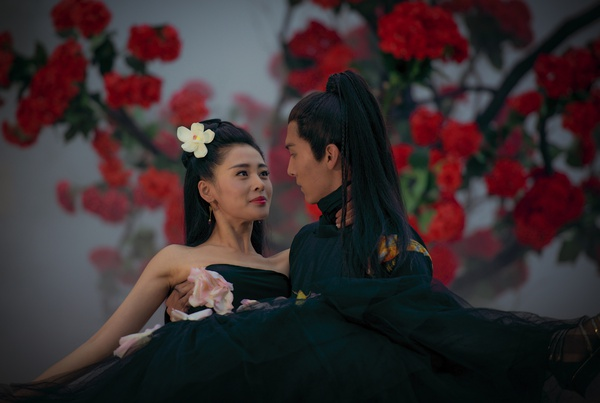
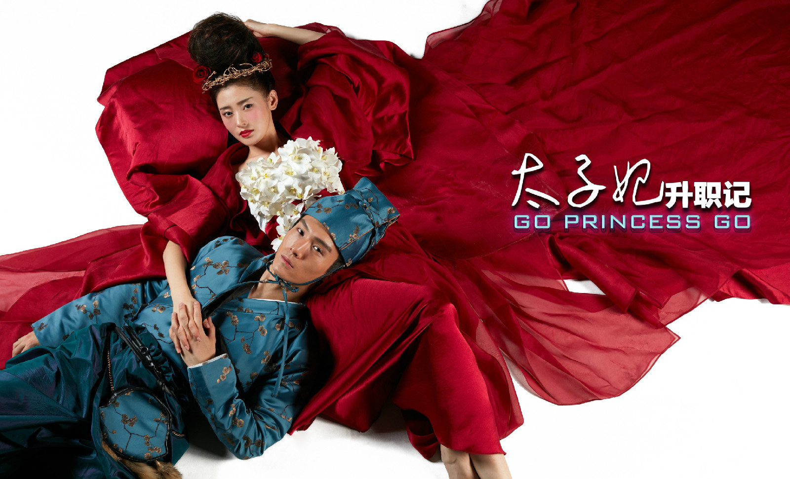
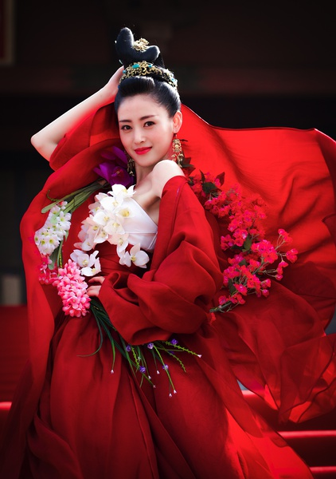

| 太子妃升职记 |
| 剧情简介 | 角色介绍 | 拍摄过程 | 服装造型 |
| 剧集评价 | 剧集争议 | 热点新闻 |
花花公子张鹏为躲避前女友们的围堵，意外落水。醒来后，发现自己不仅穿越了千年，还变性成为了
当朝的太子妃――张�M�M。猎女无数的张鹏无法接受这个事实，可也无法改变。张�M�M一方面对太子
后宫的三千佳丽垂涎三尺，一方面又不得学习如何在后宫自处。最让她头疼的是作为“太子妃”，不
得不去讨好太子齐晟。因此，女儿身、男儿心的张�M�M为了自保，不得不陷入太子、九王、赵王夺嫡
的争斗中。

- 
-
张�M�M演员:张天爱古代太子妃，由现代花花公子张鹏穿越而来，女儿身男儿心，具有男性思维和独特个性，对后宫美人垂涎三尺，但是作为太子妃又得到了古代皇子的爱恋，这个直男在古代逐渐被掰弯。
-
-

-
齐晟演员:盛一伦太子，沉稳、内敛，天资聪颖，怀着机关算计，生在帝王家的他身负重任，无形中霸气侧漏，外表看起来冷峻不近人情，实际上则深藏情思，可为爱人抛下江山。
-
-

-
九王演员:于朦胧皇子，原名齐翰，风度翩翩，温文尔雅，心思缜密，他与太子针锋相对、暗涌不断，偏爱上了得不到的张�M�M，为情痴迷。
-
该剧2015年8月1日开机，拍摄周期70天。由于播出档期已经定好，开机前道具等并没能充分准备，道具、美术置景是离开机还有5天才到象山，主要在象山影视城的赵盾府、公孙府、庄姬府、襄阳城以及摄影棚取景。
剧中的服装造型由导演把关，在古代服饰基础上引入英伦元素，根据世界服装品牌的灵感、元素进行设计。例如，剧中太子妃的雪纺装结合了《青蛇》的路线和拍摄时炎热的气候特点；鉴于该剧时尚的定位，太子的盔甲装来源于《斯巴达克斯》，以展现雄性的力量；太子的锦鲤长袍象征皇权、地位；太子出场时的短寸、耳钉造型源于2015年欧洲流行的款式；而演员后边背的“架子”则是按照英国某设计师的一款走秀服装进行设计；剧中的凉鞋由导演亲自在网上选购了4个晚上，由于时间仓促，无法继续改造，因此拍摄时只能尽量少露凉鞋。 剧组服装布料由导演选购，最贵的有每米1000多元，仅面料总共花了10万元，是剧组花费最高的地方。
该剧在内容上独辟蹊径，情节轻松、劲爆，故事走向令众人大跌眼镜，作为一部另类的古装剧，轻松明快又脑洞大开，清新脱俗，别具一格。（新华网评）
该剧包含 “宫斗”、“性别互换”、“男男CP”、“女女CP”等元素，将人们在脑中无限YY的“发现自己变了性别”的桥段搬上荧屏，“腐”中带萌点。（网易娱乐、搜狐娱乐评）
该剧摸清了群众的需求，把仅有的资金用在观众看重的剧情、画面上，画面廉价却美好、面孔赏心悦目、故事构架乐趣横生，思路值得学习。（四川新闻网时评）
2016年1月15日晚，有网友称《太子妃升职记》由于有伤风化将于16日下午5点被广电强制下线，原本12点播的大结局将提前到9点。片方对此表示不是很清楚，而乐视则回应称太子妃下架事件是谣言，将保留追究造谣者和传播网络媒体的责任。